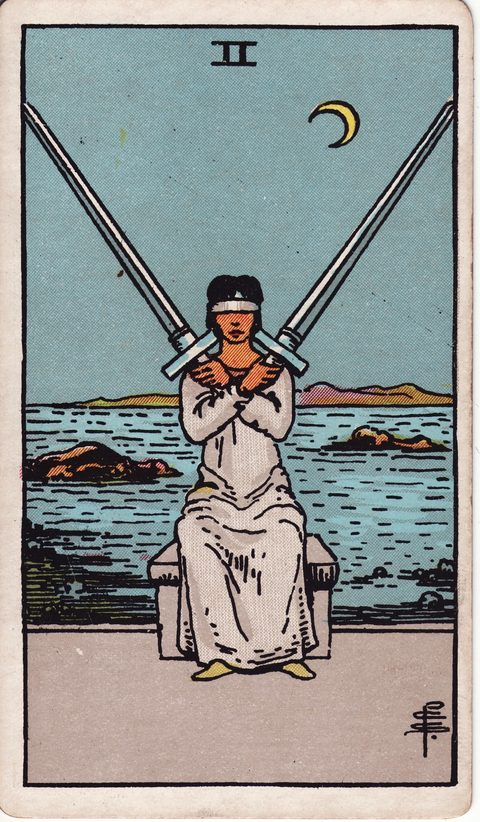
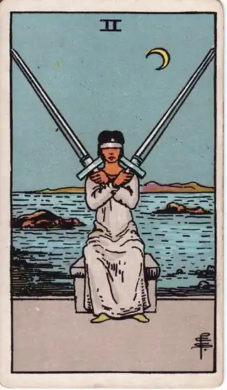
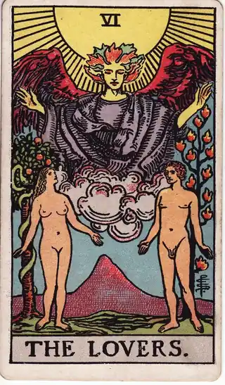
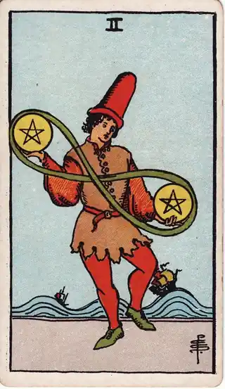

READING
決められない・優柔不断なときの考え方
・ DECIDE. 編集部

昼ごはんのメニューひとつ決めるのに、10分。返信の一文を打っては消して、また打っては消す。休日の予定は、考えているうちに一日が終わる。どれも小さな選択のはずなのに、なぜかこんなに消耗する。決めたあとも「あっちにすればよかった」と引きずるから、次も決められなくなる。
先に言っておくと、このページのゴールは「優柔不断を直すこと」ではありません。ゴールは、今日ひとつだけ、小さな選択を引きずらずに決めることです。決める練習は、人生の一大事から始めなくていい。昼ごはんでも、返信でも、休日の予定でもいい。ひとつ決めて、引きずらずに終われる。その感覚が、次の決断を軽くします。
そして、もうひとつ数字の話をしておきます。1日10分の迷いは、1年で約60時間です。980円は、その時間を買い取る金額だと考えてみてください。迷い続ける時間そのものが、もう十分に高いのです。
POINT 01 迷いの正体
決められないのは、意志が弱いからではありません。考えていないからでもありません。むしろ逆で、考えすぎているから決められないのです。正体はたいてい、次の三つのどれか、あるいは全部です。
ひとつは、後悔への怖れです。決めた瞬間から「選ばなかった側」が気になり始める。だから決める前から、選ばなかった側の味まで想像してしまう。選ぶことより、失うことを先に数えているのです。決めたあとの後悔との付き合い方そのものは、後悔しない選び方で別に扱っています。
もうひとつは、選択肢の多さと比較の無限ループです。比べて、調べて、また比べる。情報が増えるほど「まだ決めるには早い」気がしてくる。でも、比べれば比べるほど決まるわけではありません。比べる作業そのものが、決断の代わりになってしまっているのです。
そして三つ目は、「自分の気持ち」と「周りの目・期待」が混ざっていることです。「本当はどうしたいか」と「どう思われるか」を同時に考えると、どちらの選択肢も重く見えます。迷いが長い人ほど、自分の気持ちを後回しにしていることが多いものです。
POINT 02 整理の視点
今やるのは、3行だけ書くことです。「本当はどうしたいか」「怖れているのは何か」「今日決めなくても困らないか」。決めようとしなくて構いません。書くのは、決断のためではなく、頭の中の三つを分けるためです。
この書き出しは、カードを1枚引いて眺めながらやると進みやすくなります。引いたカードは答えを出すためではなく、今の自分の状態を映す鏡として使います。「迷っている」の中身が、怖れなのか、疲れなのか、実はもう決まっているのに踏み出せないだけなのか。状態が見えると、3行の切り分けが早くなります。
書き出した内容は、ログに残しておくと次に効きます。「前回はこう決めて、こうなった」。自分の決断の記録が、次の迷いの時間を短くします。決めたあとの後悔も、ログがあれば自分で検証できます。「やっぱり間違えた」のか、「決めた直後だけ不安だった」のか。後悔の正体は、時間がたってからでないと分からないものです。回数に制限がなければ、小さな選択ほど気軽に試せます。ログがたまるほど、「自分の決断の型」が見えてきます。それが、この先の迷いを軽くする仕組みです。
POINT 03 カードの読み方
決められないときの迷いでは、「均衡」「選択」「見渡す」「天秤」「保留」を表すカードが手がかりになります。

ソードの2は、目を閉じて二本の剣を均衡させる姿。どちらにも傾けられず固まっている、今の状態そのものを映します。固まっているのは、決断力がないからではなく、両方の言い分を真剣に聞いているからかもしれません。

恋人たちは、二つの道の前に立つ姿。選択そのものを描いたカードで、「どちらが正しいか」ではなく「どちらが自分らしいか」を問いかけます。正解探しをやめて、自分との相性で見る視点を示します。
ワンドの2は、高い場所から二つの道を見渡す姿。目先の損得から一歩引いて、少し先の景色で比べることを表します。今の迷いが、一年後の自分にとっても大きな問題かどうかを確かめさせます。

ペンタクルの2は、両手で金貨をあやつりながら天秤を取る姿。揺れながらも回し続ける、日常のやりくりのカードです。完璧な均衡ではなく、揺れながら進むことも決断の形だと示します。
吊るされた男は、あえて逆さに吊られて視点を変える姿。今すぐ決めず、保留して様子を見るという選択肢を示します。保留も立派な決断の形で、「決めない」と決めることも、決断のうちです。
POINT 04 自分への問いかけ
次の問いに答えてみてください。本当はどうしたいか、一文で言うと何か。怖れているのは、選ぶことか、それとも選ばなかった側のことか。今日決めなくても、本当に困ることは何か。比べてきた情報の中で、決め手になるものはもう揃っているか。決めたあとに引きずるとしたら、それは選んだ側への不満か、選ばなかった側への未練か。同じ迷い方をした前回は、どう決めて、どうなったか。
答えが揃ったら、今日ひとつだけ、小さな選択を決めてみてください。決めたら、選ばなかった側のことは考えない。それが、自分で決めるということです。決められない自分を責めなくていい。決める練習は、今日の小さな選択からでいいのです。
この記事に関係するカード
- ソードの2（Two of Swords）：どちらにも傾けず均衡を保つ姿で、二択の前で固まっている状態を映すカード。
- 恋人たち（The Lovers）：二つの道の前で、「どちらが自分らしいか」を問いかけるカード。
- ワンドの2（Two of Wands）：少し先の景色から二つの道を見渡し、長い目で比べる視点を示すカード。
- ペンタクルの2（Two of Pentacles）：揺れながらも回し続ける、日常のやりくりを表すカード。
- 吊るされた男（The Hanged Man）：あえて保留し、視点を変えて様子を見る選択肢を示すカード。